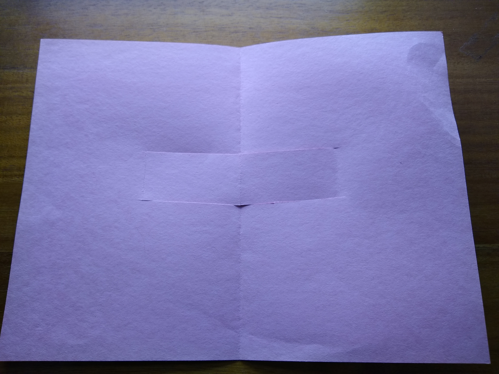

The goal of this assignment is to search externally for origami-inspired mechanisms you could use for your project. Additionally, this assignment is meant to make you think critically about how the manufacturing of foldable robots is intertwined with cutting and joining processes, and to appreciate the automation
Procedure
Read the entire assignment before starting.
Read this paper[1]. Look through other references you can find, including the book by Birmingham [2] or search via other online resources such as https://scholar.google.com
Make a table of 5 unique popup mechanisms online including an image, link, and short description.
Now, makine a two-page popup book…essentially the two covers. When you open the book, your mechanism is revealed by popping up.
You can pick your input mechanism to be the book opening, or to be some other input device like a tab-and-slot, or both, but it should be clear what simple translations or rotations power your book’s motion.
the machine should be composed of more than one mechanism, connected in series or parallel as you see fit, and you should use an example of a planar and spherical mechanism somewhere in it. Identify what is what. If you don’t know the difference, ask in class!
pick a material: something like poster-board or stiff cardstock (I have some available, please come see me)
Focus on generating interesting motion, not tesselations or repeating patterns, using the opening of the book or some other constrained input mechansim like a tab/slot.
Draw/plot the cut pattern for each layer of your popup book. Use mountain/valley/cut notation. If you don’t know what that is, ask in class!
Either find and reference a standard way of drawing cut patterns, or define the line styles you use for each.
An Example. This is an example for showing the kind of figure I expect, not to demonstrate the level of detail I expect in your own assignment.
Take 3 photos of your final popup book in open, closed, and midway positions. The simple example from above is shown in those three states, for example.
OpenMidwayClosed
Take a video of your popup book and post to youtube.
Bring to class.
Discussion
Discuss the following points:
What is the maximum amount one foldable hinge or joint can rotate from its neutral position?
Discuss the impact of your answer to question 1 with regard to the types of mechanisms one is and is not able to make.
Discuss the deficiency of using the same material at your link as your joint.
Describe strategies you could use to stiffen a link.
Consider at least two alternatives. Find an example of each.
What are the benefits and drawbacks of each?
Describe strategies you could use to weaken a joint.
Consider at least two alternatives. Find an example of each.
What are the benefits and drawbacks of each?
Suggestions
What Worked Well Last year
Being Precise
If you cut by hand, use a straightedge and x-acto.
Consider using a laser cutter to score sheet or weaken.
Detailed narrative of the steps you took, in paragraph form
Include answers to the discussion points above
Include the mechansims you found online (image, link, description)
Include photos of your popup book open, closed, and midway.
Include plot/figure of your pattern
Include References(preferred) or Links to examples.
Include your video link
Please follow the “Submission Best Practices” document posted on Canvas. This may be a .pdf document or a jupyter notebook (.ipynb). Make sure the notebook is fully compiled.
Please also bring your popup book to class on Wednesday.
Rubric
Description
Points
Report
80
Figure(s)
40
Pictures
40
Videos
20
References
20
Total
200
Bibliography
[1] B. G. Winder, S. P. Magleby, and L. L. Howell, “Kinematic Representations of Pop-Up Paper Mechanisms,” J. Mech. Robot., vol. 1, no. 2, p. 021009, 2009, doi: 10.1115/1.3046128.